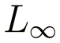

M.Sc. student in data science & artificial intelligence
 Università degli Studi di Trieste (UniTS), Trieste, Italy
Università degli Studi di Trieste (UniTS), Trieste, Italy
 contact |
github |
linkedin
contact |
github |
linkedin
I am an M.Sc. student in Data Science and Artificial Intelligence at the University of Trieste (UniTS). While my practical background is in full stack development and Linux, my true passion lies at the intersection of math, logic, and technology. I enjoy using code to give structure to abstract ideas and make complex mathematical concepts easy to visualize. My current focus is on formally verified AI, exploring how formal methods and mathematical proofs can be applied to machine learning to guarantee model reliability and safety.
2026 to present  |
M.Sc. in Data Science & Artificial Intelligence Università degli Studi di Trieste (UniTS) |
| 2023 to 2026 | B.Sc. in Artificial Intelligence & Data Analytics Università degli Studi di Trieste (UniTS) |
 Formal verification of neural networks
[code]
Formal verification of neural networks
[code]

Exact safety certification and adversarial robustness evaluation of piecewise linear neural networks on the German Traffic Sign Recognition Benchmark (GTSRB). Compares standard empirical risk minimization (ERM) against mixed adversarial training, verifying exact output invariance within a continuous

perturbation hypercube:

Leverages the Marabou SMT solver to establish sound verification guarantees against gradient based heuristic attacks (PGD), exploring the combinatorial scalability of Reluplex and certifying inviolability against localized physical adversarial patches on road signs.
 Chaos simulation
[code]
Chaos simulation
[code]
Investigation of deterministic chaos and bifurcation phenomena in a continuous three species food chain (X, Y, Z) governed by the Hastings Powell ODE system with Holling type II functional responses:

Analyzes strange attractors, Lyapunov exponents, bifurcation cascades under carrying capacity K, and chaos suppression via linear prey harvesting (hX).
 Minesweeper3D
[code]
Minesweeper3D
[code]
A three dimensional Minesweeper puzzle engine built in Python/Ursina (with Marco Carmignano), featuring an automated exact solver based on linear integer constraint satisfaction:

Ezone: a digital record player in Rust
[code]
ezone is a minimalist desktop music player that transforms your local digital audio collection into an interactive, vinyl inspired record experience.
| Mathematics | Mathematical Analysis, Linear Algebra, Fourier Analysis, Topology, Abstract Algebra, Probability & Statistics |
| Theory & modeling | Dynamical Systems & Chaos, Information Theory, Optimization Algorithms, Computability & Complexity, Numerical Analysis |
| Scientific computing | PyTorch, Scikit-Learn, NumPy, SciPy, Gurobi, Z3 SMT solver, SageMath, Statsmodels |
| Languages | Python, C/C++, MATLAB, R, JavaScript, TypeScript, Dart, SQL, Bash |
| Systems & parallel | Linux, OpenMP parallel computing, Docker, Git/GitHub |
| Software dev | React, Node.js, FastAPI, Flask, Django, PostgreSQL, SQLite, Flutter |
| Interests | Lean 4, Rust, Haskell |